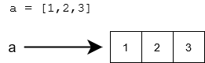
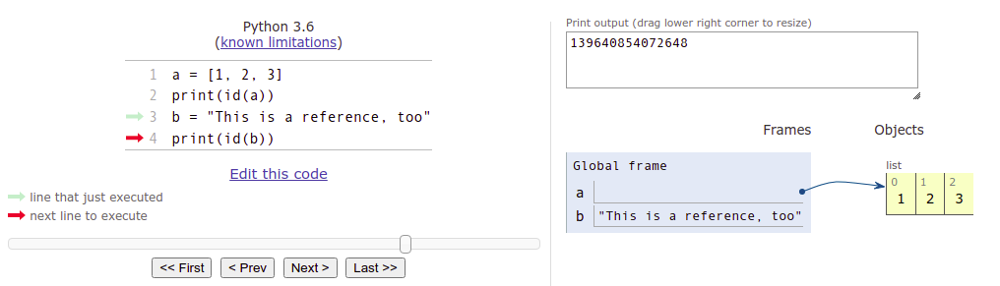
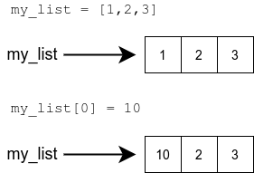
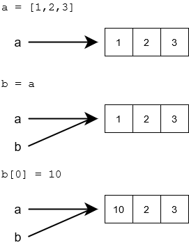
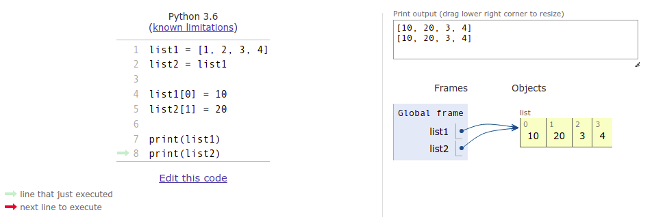
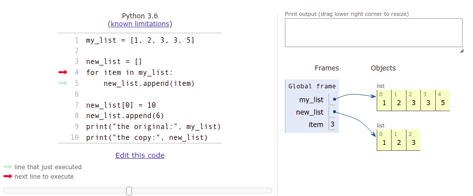
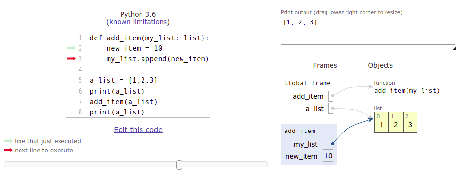
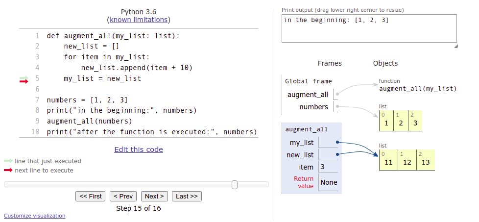

programming-25
Thus far we have thought of a variable as a sort of a “box” which contains the value of the variable. Technically this is not true in Python. What is stored in a variable is not the value per se, but a reference to the object which is the actual value of the variable. The object can be e.g. a number, a string or a list.
In practice, this means that the value of the variable is not stored in the variable itself. Instead, there is information about the location in computer memory where the value can be found.
A reference is often represented by an arrow from the variable to the actual value in memory:

So, a reference tells us where the value can be found. The function id can be used to find out the exact location the variable points to:
a = [1, 2, 3]
print(id(a))
b = "This is a reference, too"
print(id(b))
The reference, or the ID of the variable, is an integer, which can be thought of as the address in computer memory where the value of the variable is stored. If you execute the above code on your own computer, the result will likely be different, as your variables will point to different locations - the references will be different.
The Python Tutor visualisation tool also shows references as arrows from the variable to the actual content, as we saw in the previous section. The tool “cheats” a bit when it comes to strings, however. It displays strings as if they are stored in the variables themselves:

In reality, Python strings are handled very much like lists, with references to locations in memory.
Many of the builtin types in Python, such as str, are immutable. This means the value of the object, or any part of it, cannot change. The value can be replaced with a new value:

Some of Python types are mutable. For example, the contents of a list can change without needing to create a whole new list:

It may surprise you that also the basic data types int, float and bool are immutable in Python. Let’s have a look at the following bit of code:
number = 1
number = 2
number += 10
It seems that the commands above are just changing the value stored in the variable, but in fact each command creates a whole new number in the computer’s memory.
The printout from the following program illuminates the situation:
number = 1
print(id(number))
number += 10
print(id(number))
a = 1
print(id(a))
At first, the variable number points to the memory location 4535856912. When number is assigned a new value, it points to the location 4535856944. Now, when the variable a is assigned the value 1, a points to the very same location where number was pointing, when it was also assigned the value 1.
It seems Python has stored the value 1 in the memory location 4535856912. Whenever a variable is assigned the value 1, it refers to that location in computer memory.
It is good to keep in mind that almost everything is a reference in Python, but all this is rarely relevant to everyday programming tasks. So let’s get back to more practical matters.
Multiple references to the same list
What actually happens when you assign a list variable to a new variable - is the list copied over?
a = [1, 2, 3]
b = a
b[0] = 10
The assignment b = a copies the value stored in variable a to the variable b. However, the value stored in a is not the list itself, but a reference to the list.
So, the assignment b = a copies the reference. As a result there are now two references to the same memory location containing the list.

The list can be accessed through either of the two references:
list1 = [1, 2, 3, 4]
list2 = list1
list1[0] = 10
list2[1] = 20
print(list1)
print(list2)
If there is more than one reference to the same list, any one of the references can be used to access the list. On the other hand, a change made through any one of the references affects also the other references, as their target is the same.
The visualisation tool is again very useful in figuring out what is happening:

Copying a list
If you want to create an actual separate copy of a list, you can create a new list and add each item from the original list in turn:
my_list = [1, 2, 3, 3, 5]
new_list = []
for item in my_list:
new_list.append(item)
new_list[0] = 10
new_list.append(6)
print("the original:", my_list)
print("the copy:", new_list)
A snapshot of the copying process in the visualisation tool:

The variable new_list points to a different list than the variable my_list.
An easier way to copy a list is the bracket operator [], which we used for slices previously. The notation [:] selects all items in the collection. As a side effect, it creates a copy of the list:
my_list = [1,2,3,4]
new_list = my_list[:]
my_list[0] = 10
new_list[1] = 20
print(my_list)
print(new_list)
Using lists as parameters in functions
When you pass a list as an argument to a function, you are passing a reference to that list. This means that the function can modify the list directly.
The following function takes a list as an argument and adds a new item to the end of the list:
def add_item(my_list: list):
new_item = 10
my_list.append(new_item)
a_list = [1,2,3]
print(a_list)
add_item(a_list)
print(a_list)
Notice the function add_item does not have a return value. It only changes the list it takes as an argument.
The visualisation tool may help you understand what is happening here:

Global frame refers to the variables defined in the main function, whereas the add_item frame with a blue background represents the parameters and variables within that function. As you can see from the visualisation, the add_item function refers to the very same list as the main function. The changes made within the add_item function also affect the main function.
Another way to implement this functionality would be to create a new list within the function, and return that:
def add_item(my_list: list) -> list:
new_item = 10
my_list_copy = my_list[:]
my_list_copy.append(new_item)
return my_list_copy
numbers = [1, 2, 3]
numbers2 = add_item(numbers)
print("original list:", numbers)
print("new list:", numbers2)
If you aren’t absolutely sure you understand what is happening in the code above, please go through it in the visualisation tool.
Editing a list given as an argument
The following is an attempt at a function which should augment each item in a list by ten:
def augment_all(my_list: list):
new_list = []
for item in my_list:
new_list.append(item + 10)
my_list = new_list
numbers = [1, 2, 3]
print("in the beginning:", numbers)
augment_all(numbers)
print("after the function is executed:", numbers)
For some reason the function doesn’t work, so what is going on?
The function takes a reference to a list as an argument. This is stored in the variable my_list. The assignment my_list = new_list assigns a new value to that same variable. The variable my_list now points to the new list created inside the function, and the reference to the original list is no longer available within the function. This assignment has no effect outside the function, however.
Furthermore, the variable new_list, which contains the new, augmented values, is not accessible from outside the function. It is “lost” as the execution of the function finishes, and focus returns to the main function. The variable numbers in the main function always points to the original list.
The visualisation tool is your friend here, too. Please go through the stages carefully, and see how the original list is not affected by the execution of the function at all:

One way to fix this is to copy all the items from the new list to the old list, one by one:
def augment_all(my_list: list):
new_list = []
for item in my_list:
new_list.append(item + 10)
# copy items from the new list into the old list
for i in range(len(my_list)):
my_list[i] = new_list[i]
Python also has a nifty shorthand for assigning multiple items in a collection at once:
>>> my_list = [1, 2, 3, 4]
>>> my_list[1:3] = [10, 20]
>>> my_list
[1, 10, 20, 4]
In the example above a slice of the list is assigned values from another collection.
As we know, a slice can include the entire collection:
>>> my_list = [1, 2, 3, 4]
>>> my_list[:] = [100, 99, 98, 97]
>>> my_list
[100, 99, 98, 97]
The entire contents of the old list are replaced. Inspired by this, a working version of the augmenting function could look like this:
def augment_all(my_list: list):
new_list = []
for item in my_list:
new_list.append(item + 10)
my_list[:] = new_list
Actually, there is no need to create a new list within the function at all. We can just assign the new values directly into the original list:
def augment_all(my_list: list):
for i in range(len(my_list)):
my_list[i] += 10
_ _ _ _ _ _ _ _ _ _ _ _ _ _ _ _ _ _ _ _ _ _ _ _ _ _ _ _ _ _ _ _ _ _ _ _ _ _ _ _ _ _ _ _ _ _ _ _ _ _ _ _ _ _ _ _ _ _ _ _ _ _ _ _ _ _ _ _ _ _ _ _ _ _ _ _ _ _ _ _ _ Three numbers added: 2 _ _ _ _ _ _ _ _ _ _ 7 _ _ _ _ _ _ _ _ _ _ _ _ _ _ _ _ _ _ _ _ _ _ _ _ _ _ _ _ _ _ _ _ _ _ _ _ _ _ _ _ 3 _ _ _ _ _ _ _ _ _ _ _ _ _ _ _ _ _ _ _ _ _ _ _ _ _ _ _ _
Original: _ _ _ _ _ _ _ _ _ _ _ _ _ _ _ _ _ _ _ _ _ _ _ _ _ _ _ _ _ _ _ _ _ _ _ _ _ _ _ _ _ _ _ _ _ _ _ _ _ _ _ _ _ _ _ _ _ _ _ _ _ _ _ _ _ _ _ _ _ _ _ _ _ _ _ _ _ _ _ _ _ Copy: 2 _ _ _ _ _ _ _ _ _ _ _ _ _ _ _ _ _ _ _ _ _ _ _ _ _ _ _ _ _ _ _ _ _ _ _ _ _ _ _ _ _ _ _ _ _ _ _ _ _ _ _ _ _ _ _ _ _ _ _ _ _ _ _ _ _ _ _ _ _ _ _ _ _ _ _ _ _ _ _ _
Side effects of functions
If a function takes a reference to a list as an argument, it will be able to modify that list. If direct modifications were not intended by the programmer, accidentally modifying the list received as a parameter could cause problems elsewhere in the program.
Let’s take a look at a function which is supposed to find the second smallest item in a list:
def second_smallest(my_list: list) -> int:
# in an ordered list, the second smallest item is at index 1
my_list.sort()
return my_list[1]
numbers = [1, 4, 2, 5, 3, 6, 4, 7]
print(second_smallest(numbers))
print(numbers)
The function does find the second smallest item reliably, but it additionally sorts the list in place, changing the order of the items. If the order is significant elsewhere in the program, calling the function could cause errors. Unintentional modifications to an object accessed through a reference is called a side effect of a function.
We can avoid the side effect by making a small change to the function:
def second_smallest(my_list: list) -> int:
list_copy = sorted(my_list)
return list_copy[1]
numbers = [1, 4, 2, 5, 3, 6, 4, 7]
print(second_smallest(numbers))
print(numbers)
The function sorted returns a new, sorted copy of the list, so looking for the second smallest item no longer messes with the order of the original list.
It is generally considered a good programming practice to avoid causing side effects with functions. Side effects can make it more difficult to verify that the program functions as intended in all situations.
Functions free of side effects are also called pure functions. Especially when adhering to a functional programming style, this is a common ideal to follow. We will explore this topic further in Advanced Course in Programming, which is the course following this one.